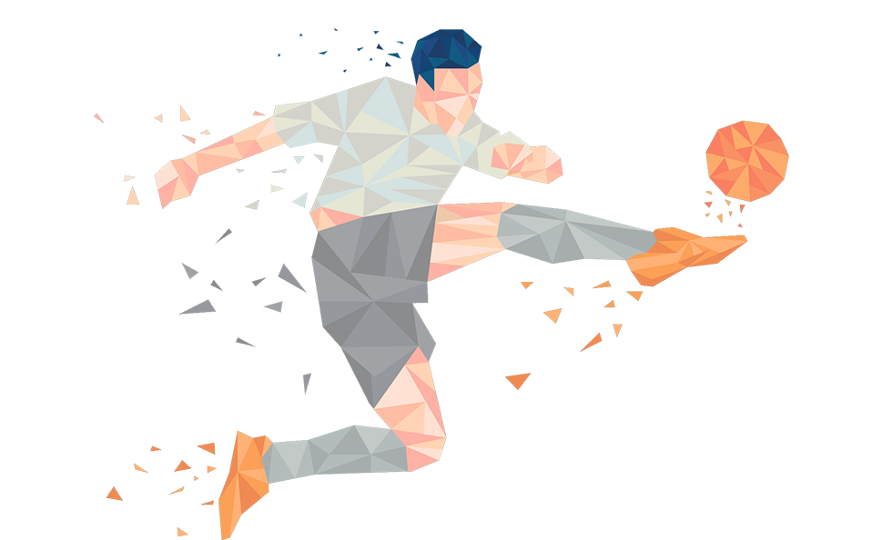
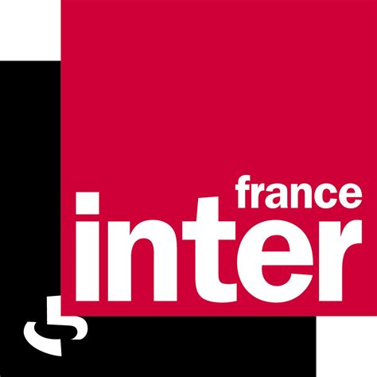
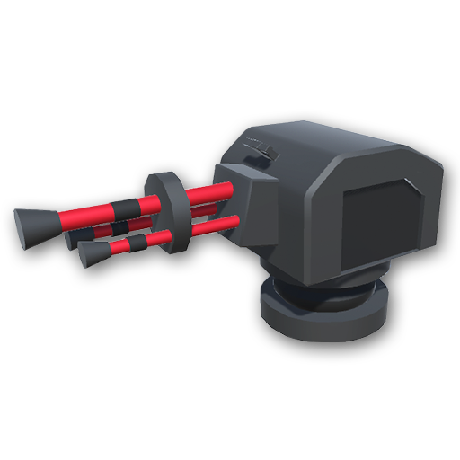

Driano Gael
Analyste programmeur
Analyste programmeur en Alternance dans l'entrepise ETIB a Lanester. Je developpe des logiciel Bureau et Application WEB

Ancien menuisier et chef d'équipe en élagage, je me suis tourné vers ma passion originelle : l'informatique.
Chaque ligne de code m'inspire à écrire la suivante ; je trouve un plaisir immense à développer la logique d'un algorithme, à le peaufiner pour en augmenter les performances, à mener des recherches pour surmonter les difficultés, à réfléchir à l'architecture du programme pour le rendre clair et modifiable aisément, évitant ainsi de reprendre tout le code à chaque évolution.
Les compétences requises dans le métier de développeur sont celles qui m'ont toujours épanoui dans mes expériences professionnelles précédentes : la logique, la curiosité, la maîtrise technique, l'analyse, la rigueur, la vigilance, la gestion du stress, le travail en équipe, la communication efficace, le plaisir et la volonté de créer en répondant à des besoins spécifiques, en voyant la récompense derrière chaque moment de persévérance.
J'apprécie d'être l'intermédiaire entre le porteur de projet et l'utilisateur final, prenant le temps d'échanger pour comprendre les besoins et les traduire en langage machine.
Projet pour le BTS |
|||
 DodgeForge
DodgeForge
|

SpaceOddici (En cours)
|
||
Projet Personnels |
|||
|

webscrapping France inter
|
 Bot discord GlobeOil
Bot discord GlobeOil
|
||
 jeu de plateform en 2D avec Unity3d
jeu de plateform en 2D avec Unity3d
|

jeu de tower defense en 3D avec Unity3d
|
||
Projet professionnels |
|||
|
maintenance et evolution de progiciel de facturaction et comptabilite en WINDEV
|
creation d'un logiciel de sauvegarde pour les bases de données clients en WINDEV
|
||
Rencontrons nous
|
Mon profil vous interresse et vous voulez me renconter? |